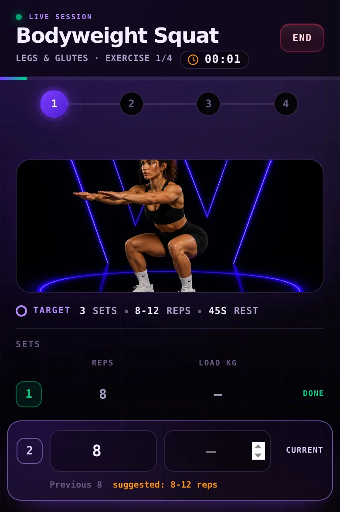
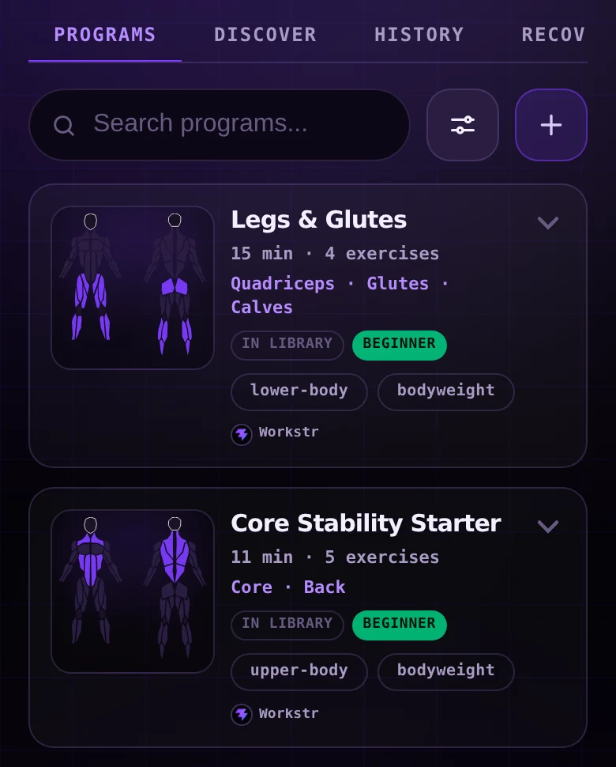
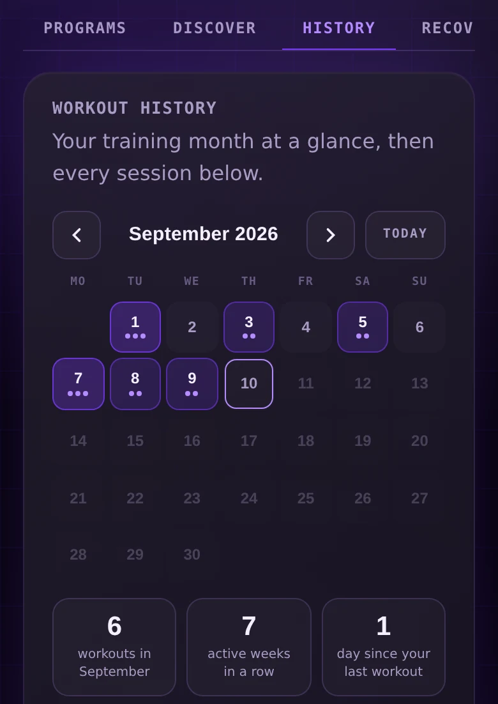

Log a set, follow your progress and keep moving. Workstr keeps the active exercise, timer and next action within reach.

Live progress · Rest timer · EMOM + supersets
Workflow
From a plan to your next session.
01
Choose
Pick a curated program, discover one through Nostr, build your own or start a Quick Workout.
02
Train
Run normal sets, supersets and EMOM blocks from one focused session screen.
03
Review
Look back at your history, repeat a workout and read what the training adds up to.
04
Recover
Check which muscle groups are still recovering before you pick the next session.
Beyond the session
Everything around the workout.
Workstr helps you choose what to train, capture the session and understand what the work is adding up to.
Start with structure—or build your own.
Choose a curated program, assemble one from the exercise library or begin a Quick Workout when you do not need a complete plan.
Curated exercise library
Ready-to-use programs
Custom program builder
Quick Workout
Signed creator programs through Discover

See the work add up.
Review training by day, repeat a previous workout and use practical statistics to understand consistency, volume and muscle distribution.
Monthly workout history
Session timeline
Repeat Workout
Weekly volume
Consistency and streaks
Muscle distribution
Optional body metrics

Plan with recent training in view.
Workstr turns completed sets into a practical recovery estimate, helping you see which muscle groups were trained recently before choosing the next session.
Workstr keeps the core training experience on your device. An account is optional, your records are portable, and both sync and sharing stay decisions you make rather than conditions of using the app.
Local by default
Programs, sessions and history are stored on your device and stay readable offline.
No account required
Open Workstr and start the first workout. There is no sign-up step.
Portable records
Export and restore your complete Workstr data whenever you want it elsewhere.
Optional encrypted sync
Turn on encrypted Nostr sync when you want the same records on another device.
Share by choice
Publish a workout summary through Nostr only when you choose.